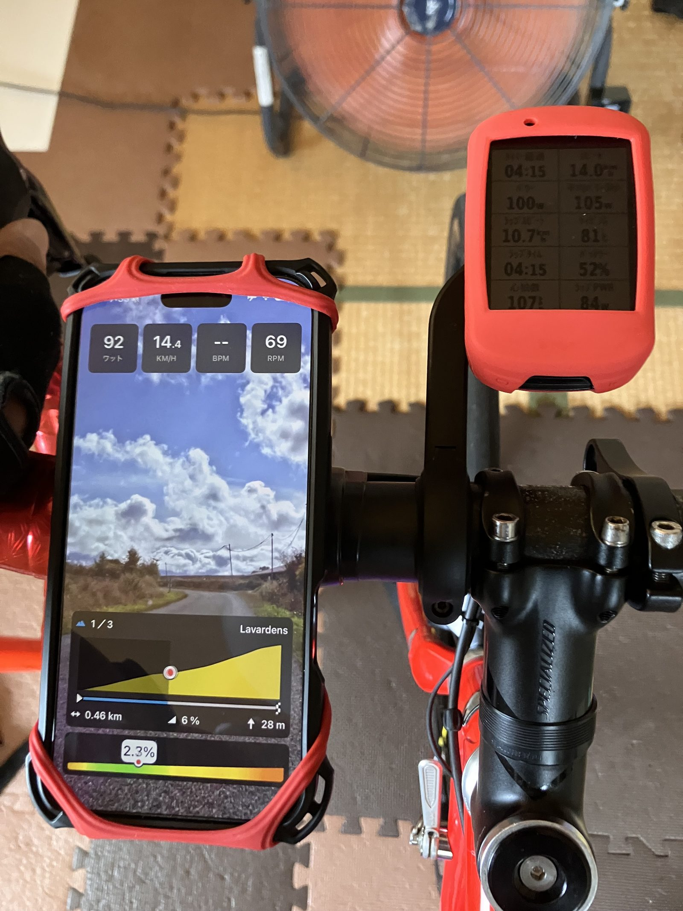
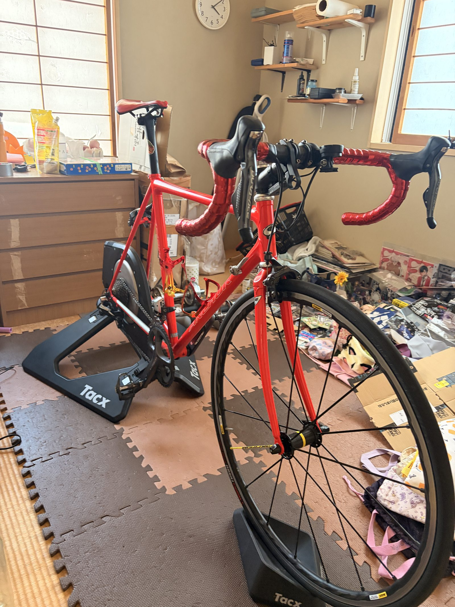

スマートローラーを借りて試した。でも今後も4本ローラーでいく
知人から「使うなら」とTacx NEO Smartを貸してもらった。映像に合わせて負荷が変わり、路面の感触まで返ってくる本格的なスマートローラーである。
実際に乗ると、かなり面白かった。ただし今後も使い続けるかと聞かれたら、私は4本ローラーを選ぶと思う。

デモコースを2本走ってみた
借りたのは初代のTacx NEO Smart。カセットを取り付け、RNC7を載せ、Tacx Trainingアプリへ接続した。BluetoothとANT+、負荷制御まで確認して準備完了である。
今回は本格的なトレーニングではなく、デモコースを2本走った。距離13.14km、34分、平均136W、NP161W、獲得標高276m、概算TSSは約20。完全に軽めの試乗で、負荷を積むより機能を一通り体験する時間だった。

登りと下りが、足元から返ってくる
一番良かったのは、単純に体験として面白かったこと。画面にはヨーロッパの風景が流れ、コースの勾配に合わせて負荷が自動で変わる。
下りへ入るとペダルが軽くなり、登りへ入ると重くなる。自分で負荷を作るのではなく、コース側から負荷が返ってくる。この変化は思っていた以上に実走らしかった。
石畳の振動には驚いた
特に驚いたのが石畳の区間である。画面が石畳へ変わると、ペダルや車体へ細かな跳ね返りのような振動が伝わってきた。映像だけでなく、足元から路面が変わったと分かる。
スマートローラーは自動で負荷をかける機械だと思っていたが、それだけではなかった。室内に実走感を作る機材なのだと、乗って初めて理解できた。
それでも4本ローラーの方がしっくりきた
面白かったし、機能にも驚いた。それでも今後のローラー練習は、これまで通り4本ローラーでいこうと思う。理由は単純で、私が4本ローラーに慣れているからだ。
どのギアでどのくらい回せば、どれくらいのパワーになるか。負荷を上げたい時にどうするか。ペダリングが乱れた時にどう修正するか。その感覚がすでに体へ入っている。
4本ローラーでは自分でバランスを取り、フォームや体幹も含めて走る必要がある。私はその感覚が好きだ。ERGモードでSSTや一定走をするならスマートローラーは便利だと思うが、今回は4本ローラーの勝手の良さが上回った。

自分に合うかは、性能だけでは決まらない
映像、自動負荷、ロードフィール、固定された安定感。機能だけを並べればスマートローラーの方が多い。それでも、高機能なものが自分にとって一番使いやすいとは限らない。
私は4本ローラーの設置方法も乗り方も、練習の組み立ても分かっている。これまでのデータや体感も4本ローラー基準で積み上げてきた。その差は思っていたより大きかった。
借りたスマートローラーは返すことにした
このTacx NEO Smartは「使うなら」と貸してもらったものだった。試したうえで今後も継続して使うかを考え、返すことにした。使わないまま部屋へ置くには大きくて重いし、借り物なら必要としている人のところへ戻った方がいい。
ただ、借りられたこと自体は本当にありがたかった。映像の楽しさ、登りと下りの負荷変化、石畳の振動、ダイレクトドライブの安定感。買わずにここまで体験できたのは大きい。
今回やってみて思ったこと
スマートローラーは面白かった。機材としてもよくできていて、合う人にはかなり便利だと思う。それでも今の私には、4本ローラーの方がしっくりきた。
自分で負荷を作り、自分でバランスを取り、自分のペダリングで走る。新しい機材を試したことで、元の環境の良さが分かった。今後も4本ローラーで地道に回していく。
自分用メモ
- 距離13.14km、時間34分、獲得標高276m
- 平均136W、最大292W、20分最大153W、NP161W
- 運動量280kJ、概算TSS約20
- Tacx Trainingアプリのデモコースを2本走行
- Tacx NEO Smartは返却し、今後も4本ローラーを主力にする